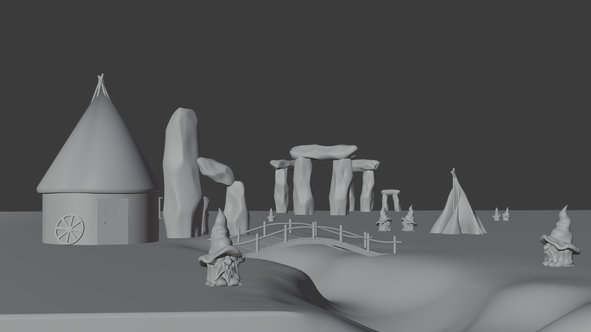
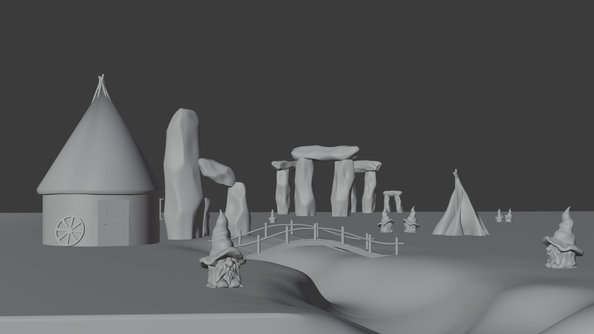

Gnome Hideout je moja najnovšia scéna vyrenderovaná v Unreal Engine 5. Tento úkryt pre gnómov má pôsobiť čarovne a bezpečne, kedže sa ich úkryt nachádza v strede lesa môžu tam gnómovia bezpečne žiť, čarovať a jednoducho žiť kľudný život.
V tejto sci-fi scnéne s názvom Space Pod môžeme pozorovať zpustošenú lávovú planétu, na ktorej pristál vesmírny modul, ktorý priniesol na planétu život a bádateľa, ktorý sa formou hologramu vydal preskúmať tento zatiaľ na prvý pohľad mŕtvy svet.
Táto scéna bola silno inšpirovaná hrou The Last Of Us, mojím cieľom bolo vystihnúť opustenú a pochmúrnu atmosféru, v scéne vidíme opustený dom, v ktorom nevieme, čo nás v ňom čaká, preživší alebo hrozba?
Na scéne The Gate sa nachádza veľká brána, ktorá chráni mesto, obyvatelia tohoto mesta sa každý deň môžu zobúdzať s pocitom bezpečia pretože ich chráni mohutná brána, na ktorú sa snažia vyletieť holubice.
Scéna Slavic Village je silno inšpirovaná slovanmi a svetom Zaklínača, dedinku zobúdza nový deň, ale ranné slnko nezobúdza len dedinku ale aj okolitú prírodu.
Vesmírna loď zaznamenala, že jej pasažier sa zobúdza tak vypína režim spánku, svetlá sa zhasínajú ale okno odhalujúce okolité planéty sa otvára, taktiež sa s cestovateľom vo vesmíre zobúdza aj malý spoločník kocúrik :D.
Scéna Stranded Land je inšpirovaná prírodou Islandu a hrou Death Stranding, cieľom bolo vytvoriť chladnú a osamotenú atmosféru.
V scéne Lookut vidíme lampu a okno do nočného lesa, dívame sa z pohľadu správcu lesa, na stole má noviny a jeho obľúbenú šálku, taktiež môžeme vidieť zapnuté rádio aby sme vedeli o všetkom čo sa v okolí deje.
Scéna Calling Of Birds bola mojou ďaľšiou scénou, ktorá bola silno inšpirovaná hrou The Last Of Us, aj keď tento krát som sa snažil o čosi svetlejšiu a pozitívnejšiu náladu.
Animácia Beauty In Perception bola mojá práca do stredoškolskej odbornej činnosti, BIP ma jednoduchý ale za to krásny význam, má poukázať na krásu každodenného života a na to ako sa táto krása u každého z nás môže líšiť.